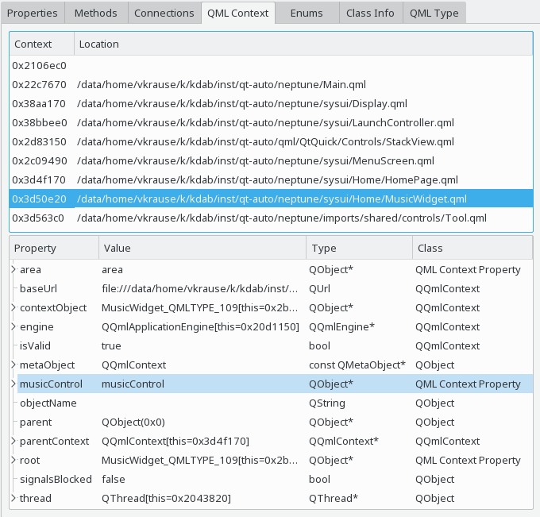

The QML context view shows the chain of QQmlContext instances from the root context up to the context in which the current object has been created. The QML context view is available for any QObject instantiated from within QML.

The QML context views consists of two parts, the context chain view on the top, and the context property view at the bottom. The context property view shows the currently selected context from the context chain view.
The context chain view shows the entire chain of QQmlContext instances starting from the root context in the first line. For each context, the corresponding QML file is displayed, as far as that information is known. The context menu allows you to navigate to the source code, opening it in your configured code editor.
For the selected context in the context chain view, the context properties view shows the properties of the corresponding QQmlContext object. This view essentially works like the general Properties view.